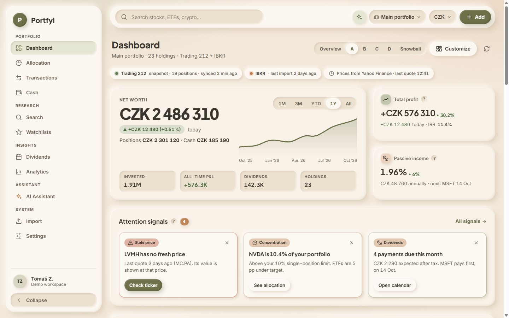

AHero first
Kostra dnešního Portfylu zůstává. Velké číslo Net Worth s grafem je pořád „kotva“, jen se k němu přidá to nejlepší ze Snowballu.
Z PortfyluNet Worth hero se sparkline, stav synchronizace, výkon s benchmarky, heatmapa, top 10 pozic, top movers, insider nákupy
Ze SnowballuCelkový zisk + IRR, pasivní příjem, insight karty (z attention signals), donut + kategorie s cíli, dividendové sloupce
- nejmenší změna oproti dnešku
- uživatelé Portfylu se hned zorientují
- nejdelší stránka, hodně scrollování
- dividendy až úplně dole